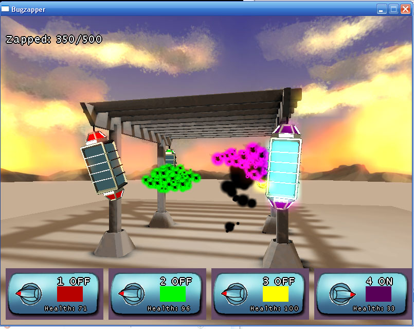
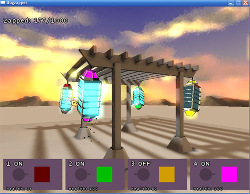
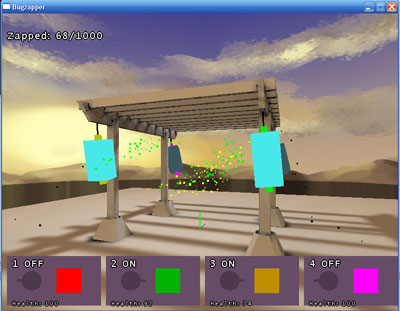
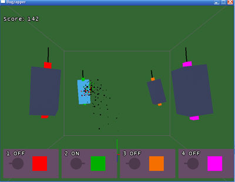
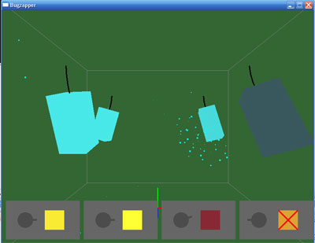
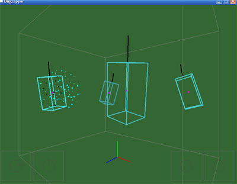
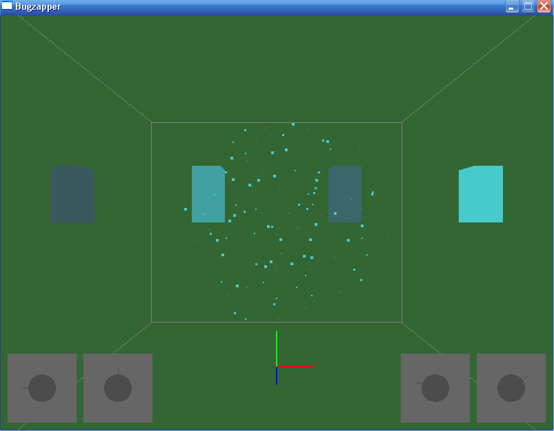
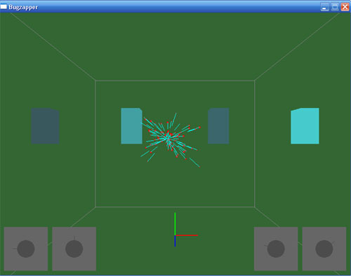
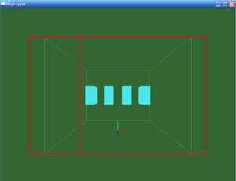

Sun, 7:44 PM PST -- Done!
It's DONE! I added a better title screen, there's lots of stuff I didn't get to, but
i'm pretty happy with the results. It's fun, and it looks really cool.
Download BUGZAPPER! (1.5mb)
Bugzapper source code (16k)
Sun, 6:15 PM PST -- Bugs and HUD!

Yay, there's a new HUD now. Better controls for the zappers, too. But the best thing is
the bugs are no longer glPoints, they are real bugs. The game is done-ish, but I'm going to
try and add sparks from the zapper when they get zapped.
Sun, 4:30PM PST -- Glow!

There's a glow effect now. And models for the zappers instead of cubes.
It could be a lot better in both look and performance, but for now it's good enough.
I still have too much left to do: draw the bugs better, better HUD, some gameplay tweaks.. aagh
Sun, 1:30PM PST -- Scene

Ok so it's starting to look good. I've got a gazebo thinggy and a ground plane in
now, and I made lightmaps for them. No base texture yet but it looks pretty cool. Now to make the bugs and the zappers look cool.
Sun, 10:30 AM PST -- Concept art

Good morning all. Today is all about getting the graphics working, so I put together
some crappy concept art of how it should look. Or something. It's a barbeque theme.
Sat, 2:18 AM PST -- Gameplay done
Ok, I added placeholder menus and levels. Still a few tweaks to make with gameplay but I'm
going to leave it as is for now and go to sleep. Tommorow will be about replacing the
wireframe and point graphics with "good" graphics.
Sat, 11:32 PM PST -- Completely new gameplay

Ok, so I completely changed the gameplay. It's not the most fun game in the world now, but it
is ok at least. You have four color coded bug-zappers and you can them on and off. You get points
for zapping bugs of the matching color, and zapping unmatched bugs damages the zapper.
Sat, 7:51 PM PST -- Playable kind of

So the game is "playable". Except it's extremely not fun. But it's a starting point. It looks really funny when the bugs hit the zappers and bounce off, too.
Sat, 5:23 PM PST -- Progress

Making slow but steady progress:
- Zappers swing in the breeze
- Bugs can detect if they hit a zapper
- Bugs are attracted to the brightest zapper
Next up is making the bugs actually spawn and die, and then making the zappers overheat if they are
left on too long. That will be the basic gameplay, and maybe then I can finally get around to
making it look good.
Sat, 2:45 PM PST -- I'm back

Well, not surprisingly, I overslept. But I woke up and was able to fix the problems with my swarming with my newfound lack of fatigue. The swarm looks really sweet now, you can't see it from the screenshot but they are moving around in a very authentic bug-looking way. I'm using Reynold's boids for the flocking movement.
Friday, 4 AM PST -- Must sleep

The game has bugs! Some bugs flying around, and some bugs in the code, too.
I'm past the point of clear thinking, so I'm going to sleep before I do more harm than good. See you tommorow.
Friday, 1:23 AM PST -- Bugzapper: the game
Okay here's a thrilling screenshot. Wow. I mean, check that out.
I have an idea now. "Bugzapper: The game". It's pretty funny at least but I don't know how fun it will be. Then again, I used to watch those things for hours. It's like a TV show, but on your porch.

Friday, 11:15 PM PST -- Idea... nah...
So I've made a little progress, I have an empty app with an update/redraw loop.
I thought of an idea, but then i decided I didn't like it.
Friday, 10PM PST -- Getting Started
Ok so I left work thinking that magnetism would win. I got dinner (Panda Express, it's fast food but at least they use real panda. Mmmm. ) Stocked up on caffienne for the weekend, and worked out. All the while brainstorming game ideas for magnetism.
I had too many good ideas. And now it's not magnets at all and im stuck with swarms. (which is a perfectly good topic, too). Time to start brainstorming again... :)